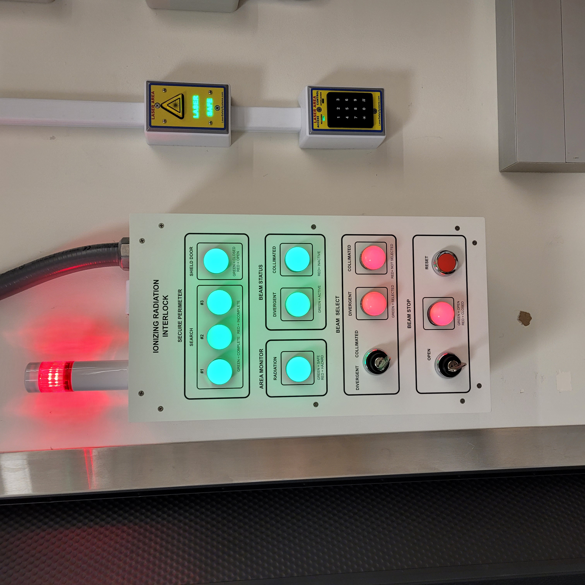
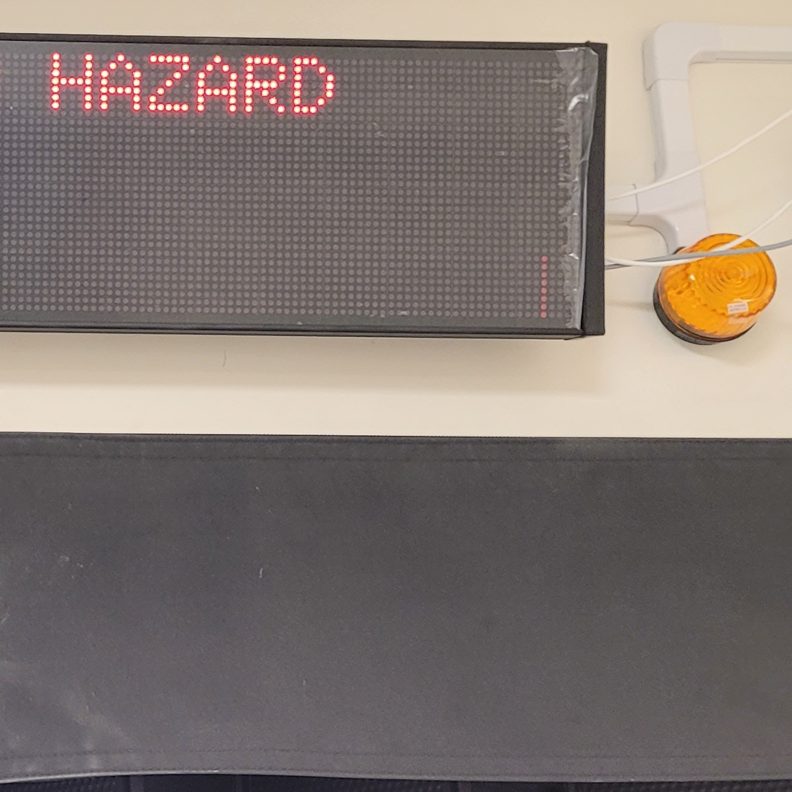
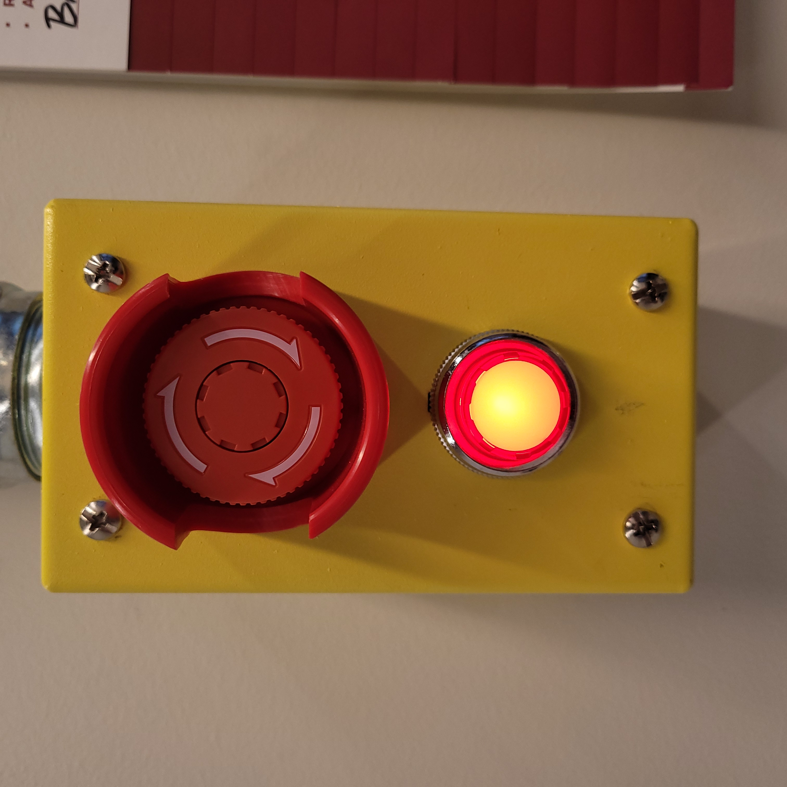
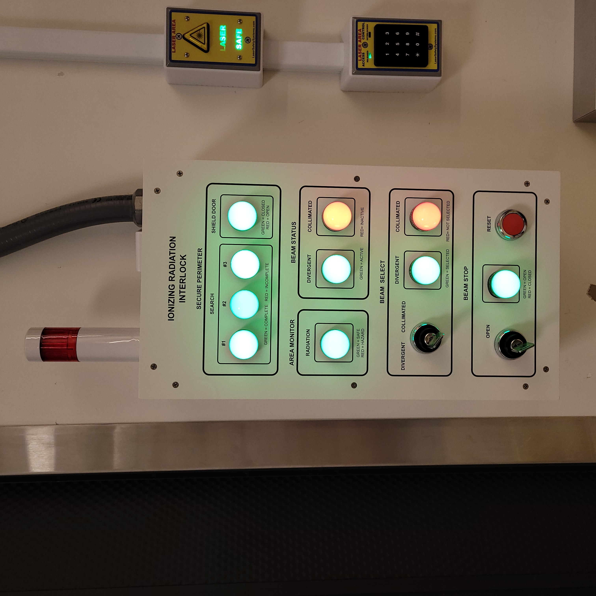
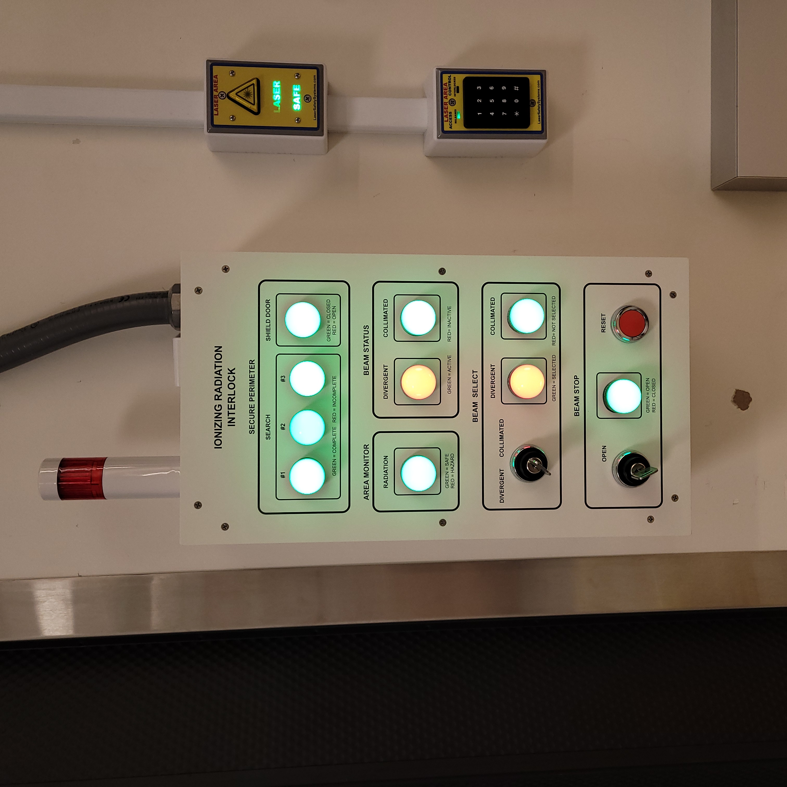

Hutch-1 Ionizing Radiation Interlock System User Manual
This document provides a user overview for the Hutch-1 Ionizing Radiation Interlock System. It covers the hazard indicators, control protocase, and beacons in Hutch-1 Control. The control protocase allows users to view and change the secure state of Vault-1, arm the accelerator and transmitters, and monitor area monitors. The beacons indicate the enabled state of RF and ionizing radiation emergency stop buttons.
Hutch-1 Ionizing Radiation Hazard Indicators
This section will cover the ionizing radiation hazard indicators in Hutch-1 Control. These hazards will correspond to hazards present in Hutch-1.
Unlike the Vault-1 ionizing radiation interlocks system, the VIEWMARQ display in Hutch-1 Control only shows the status of the Hutch-1 laser interlocks system.
Hutch-1 Control Protocase
The Hutch-1 Control IONIZING RADIATION INTERLOCK protocase is an interface to view if Hutch-1 is secure, control the double tungsten shutters, and view the status of the area monitors. This panel is located on the north wall in Hutch-1 Control next to the Hutch-1 door.
The SECURE PERIMETER section of the protocase shows the status of search buttons being engaged and if the shield door is open. If all the lamps are green, then Hutch-1 is in a secure state. When Hutch-1 is secure the hutch cannot be entered until the accelerator is put into an unarmed state. If the shield door is opened when one of the double tungsten shutters is open, the interlocks system will trip and close the shutter. Once Hutch-1 is secured the allowed dose rate on the Hutch-1 rate meters changes from the non-radiation facility user set point of 50 µS/hr to the radiation worker set point of 500 µS/hr.
The AREA MONITOR section of the protocase shows if any rate meter in the CXLS suite is alarming. If the RADIATION lamp is red, then there is either an alert, alarm, or fail status from one of the rate meters. If any of the radiation meters alarm then the interlocks will trip, and the accelerator will be put into a safe state.
The BEAM STOP section of the protocase shows if the beam stop is open. If the lamp is green, then the beam stop is open, and beam is being imported into Hutch-1. Above that are the BEAM STATUS AND BEAM SELECT lamps, which show if the divergent or collimated beam is being imported into Hutch-1. These lamps should show the same thing, BEAM SELECT shows what the user has selected and BEAM STATUS shows the actual positions of the shutters, green being open.

Figure 1: This is the Hutch-1 Control IONIZING RADIATION INTERLOCK protocase. In this state, Hutch-1 is not secured
O2 Main and Remote Units
There are two O2 sensors in the Hutch-1 ionizing radiation interlock system. One is located on the Hutch-1 west wall and the other is located in the Astrella enclosure. These units will have an audible alarm and flash one of the AL# LEDs depending on the alarm set point it passed. Any \(O_{2}\) reading below 19% will cause the sensors to alarm. Each O2 sensor has a remote unit that only displays information from the main sensor unit. The Hutch-1 west wall and Astrella enclosure O2 remote units are located in Hutch-1 Control next to the Hutch-1 Control IONIZING RADIATION INTERLOCK protocase.

|

|
O2 main unit. ===================================================================== |
O2 remote unit. =================================================================== |
Figure 2: This is the O2 sensor pair.
Beacons
In Hutch-1 Control, there are two beacons that show ionizing radiation hazards. There is one for the \(O_{2}\) levels and one for the ionizing radiation emergency stop button.
|  |  |
Protocase beacon ================================================================= |
O2 beacon ======================================================================== |
{kind=link}
{kind=link}
Figure 3: These are the beacons in Hutch-1 Control.
Status |
Beacon Color |
|---|---|
The red beacon indicated that an ionizing radiation emergency stop button had been pressed. This beacon is also on the Vault-1 Control protocase. |
Beacon Color |
The orange beacon indicates that one of the O2 meters is reading below 19% oxygen levels. |
Beacon Color |
Ionizing Radiation Monitoring GUI
Note
The ionizing radiation monitor may go through changes in the near future. This section will be updated when those changes are made.
Ionizing Radiation Emergency Stop Buttons
Throughout the CXLS suite there are ionizing radiation emergency stop buttons. These e-stop buttons will cut power to the transmitters, putting the accelerator in a safe state. Once the transmitters are crashed, there will not longer be a source of ionizing radiation. When an ionizing radiation e-stop button is pressed, the LED on the unit will turn on, all red beacons will turn on, and the VIEWMARQ displays will show IONIZING RADIATION E-STOP ACTIVATED. To disengage the e-stop, rotate the button clockwise.
It is important to note that only the ionizing radiation emergency stop buttons will put the accelerator into a safe state. There is also laser emergency stop buttons that will only cut power to their specific laser if armed and do not affect the transmitters.

|
 |
Ionizing radiation emergency stop button off. ============================================== |
Ionizing radiation emergency stop button on. =============================================== |
{kind=link}
Figure 4: This is the ionizing radiation emergency stop button in both states.
Search Procedure for Securing Hutch-1
To be able to operate the double tungsten shutters, Hutch-1 must be searched and secured. Starting at the North-East end of Hutch-1 (upstream steam of the chambers), while verifying the hutch is empty, press the search button labeled 1. As you continue to search and clear press 2 then 3 as you’re working your way towards the hutch entrance. Once the 3rd search button is pressed, a chime will be audible and a timer will start and all the SECURE PERIMETER SEARCH lamps on the Hutch-1 Control IONIZING RADIATION INTERLOCK protocase will be green. If the search buttons are pressed out of order, or the search takes too long, the search will need to be restarted.

Figure 5: This is a diagram of the Hutch-1 search buttons. The numbers indicate the order in which they need to be pressed.

|

|
Vault-1 search button off. ============================================================ |
Vault-1 search button on. ============================================================= |
Figure 6: This is the Vault-1 search button in both states.
{kind=link}
Figure 7: This is the Hutch-1 Control IONIZING RADIATION INTERLOCK protocase when Hutch-1 is searched.
Once Hutch-1 is searched and all the search buttons have been pressed in the correct sequence, all the SECURE PERIMETER SEARCH lamps on the Hutch-1 Control IONIZING RADIATION INTERLOCK protocase will be green. Unlike the Vault-1 door, this door is closed by pulling the door shut. Once the door is fully closed and actuating the door switches the SECURE PERIMETER SHIELD DOOR lamp on the Hutch-1 Control IONIZING RADIATION INTERLOCK protocase will be green.
{kind=link}
Figure 8: This is the Hutch-1 Control IONIZING RADIATION INTERLOCK protocase when Hutch-1 is secured.
Controlling the Beam Status in Hutch-1
Once Hutch-1 is searched and secured, the beam stop can be opened by turning the BEAM STOP OPEN key on the Hutch-1 Control IONIZING RADIATION INTERLOCK protocase, the lamp should turn green when the stop is open. If the shield door is opened with the beam stop open, the beam stop will close, and Hutch-1 will no longer be secure.
At any point, the shutters can be closed again by hitting BEAM STOP RESET on the Hutch-1 IONIZING RADIATION INTERLOCK protocase.
When the beam stop is open, the shutters will only allow either the collimated or divergent beam into Hutch-1. To select which beam is allowed into Hutch-1 use the BEAM SELECT key on the Hutch-1 Control IONIZING RADIATION INTERLOCK protocase. The BEAM SELECT lamp shows what has been selected, and the BEAM STATUS lamp shows the status of the shutters.
|  |  |
Divergent beam open. =============================================================== |
Collimated beam open. ============================================================== |
{kind=link}
{kind=link}
Figure 9: This is the Hutch-1 Control IONIZING RADIATION INTERLOCK protocase when either shutter is open. When the beam stop is open a shutter will automatically open to whatever beam select is set to before hand.
Putting Hutch-1 into a Non-Secure State
Once work in Hutch-1 is completed and is no longer required to be in a secure state, press the BEAM STOP RESET button on the Hutch-1 IONIZING RADIATION INTERLOCK protocase and open the shield door.